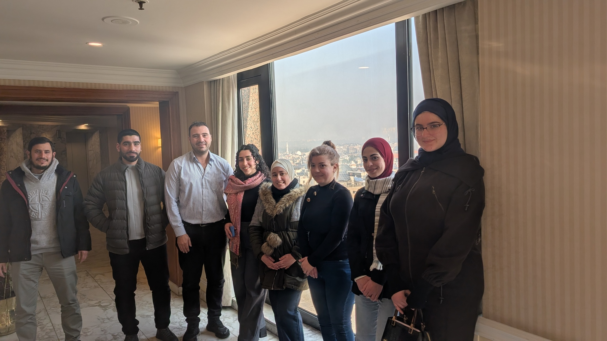

OSM Syria — In-person Meeting, Damascus
Organizer & Facilitator · OSM Syria / HOT


Organized and facilitated the 3rd OSM Syria community meeting — and the first in-person gathering — held at Hotel Al-Sham in Damascus, Syria. Eight community members attended. The agenda covered member introductions, an overview of OSM and HOT's organizational structure, available volunteer roles in Aleppo and Damascus Suburbs, State of the Map 2026 (Paris) scholarship opportunities, and practical discussions on 360-camera and drone mapping possibilities. The YouthMappers program and mapping apps (OsmAnd, Waze) were also discussed.
The meeting concluded with group photos and a plan to document a drone/360-camera proof-of-concept. This gathering marked a significant milestone for the community — a physical meeting in Syria itself, demonstrating the growing momentum of open mapping and community organizing within the country.
Meeting documentation